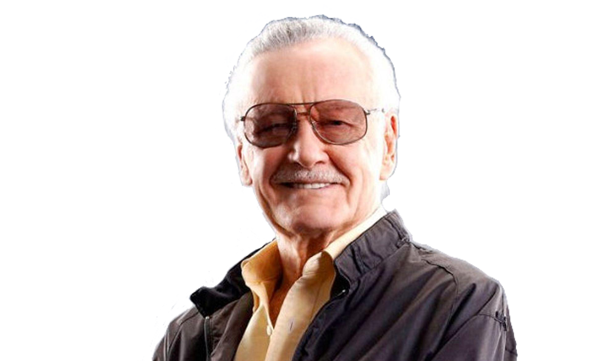

The first modern comic books under the Marvel Comics brand were the science-fiction anthology Journey into Mystery #69 and the teen-humor title Patsy Walker #95 (both cover dated June 1961), which each displayed an "MC" box on its cover. Then, in the wake of DC Comics' success in reviving superheroes in the late 1950s and early 1960s, particularly with the Flash, Green Lantern, Batman, Superman, Wonder Woman, Green Arrow and other members of the team the Justice League of America, Marvel followed suit.
In 1961, writer-editor Stan Lee revolutionized superhero comics by introducing superheroes designed to appeal to older readers than the predominantly child audiences of the medium, thus ushering what Marvel later called the Marvel Age of Comics. Modern Marvel's first superhero team, the titular stars of The Fantastic Four #1 (Nov. 1961), broke convention with other comic book archetypes of the time by squabbling, holding grudges both deep and petty, and eschewing anonymity or secret identities in favor of celebrity status. Subsequently, Marvel comics developed a reputation for focusing on characterization and adult issues to a greater extent than most superhero comics before them, a quality which the new generation of older readers appreciated. This applied to The Amazing Spider-Man title in particular, which turned out to be Marvel's most successful book. Its young hero suffered from self-doubt and mundane problems like any other teenager, something with which many readers could identify.
Stan Lee and freelance artist and eventual co-plotter Jack Kirby's Fantastic Four originated in a Cold War culture that led their creators to revise the superhero conventions of previous eras to better reflect the psychological spirit of their age. Eschewing such comic book tropes as secret identities and even costumes at first, having a monster as one of the heroes, and having its characters bicker and complain in what was later called a "superheroes in the real world" approach, the series represented a change that proved to be a great success.
Marvel often presented flawed superheroes, freaks, and misfits—unlike the perfect, handsome, athletic heroes found in previous traditional comic books. Some Marvel heroes looked like villains and monsters such as the Hulk and the Thing. This naturalistic approach even extended into topical politics. Comics historian Mike Benton also noted:
In the world of [rival DC Comics'] Superman comic books, communism did not exist. Superman rarely crossed national borders or involved himself in political disputes. From 1962 to 1965, there were more communists [in Marvel Comics] than on the subscription list of Pravda. Communist agents attack Ant-Man in his laboratory, red henchmen jump the Fantastic Four on the moon, and Viet Cong guerrillas take potshots at Iron Man.
All these elements struck a chord with the older readers, including college-aged adults. In 1965, Spider-Man and the Hulk were both featured in Esquire magazine's list of 28 college campus heroes, alongside John F. Kennedy and Bob Dylan. In 2009, writer Geoff Boucher reflected that, Superman and DC Comics instantly seemed like boring old Pat Boone; Marvel felt like The Beatles and the British Invasion. It was Kirby's artwork with its tension and psychedelia that made it perfect for the times—or was it Lee's bravado and melodrama, which was somehow insecure and brash at the same time?
In addition to Spider-Man and the Fantastic Four, Marvel began publishing further superhero titles featuring such heroes and antiheroes as the Hulk, Thor, Ant-Man, Iron Man, the X-Men, Daredevil, the Inhumans, Black Panther, Doctor Strange, Captain Marvel and the Silver Surfer, and such memorable antagonists as Doctor Doom, Magneto, Galactus, Loki, the Green Goblin, and Doctor Octopus, all existing in a shared reality known as the Marvel Universe, with locations that mirror real-life cities such as New York, Los Angeles and Chicago. Marvel even lampooned itself and other comics companies in a parody comic, Not Brand Echh (a play on Marvel's dubbing of other companies as "Brand Echh", à la the then-common phrase "Brand X").
Originally, the company's publications were branded by a minuscule "Mc" on the upper right-hand corner of the covers. However, artist/writer Steve Ditko put a larger masthead picture of the title character of The Amazing Spider-Man on the upper left-hand corner on issue #2 that included the series' issue number and price. Lee appreciated the value of this visual motif and adapted it for the company's entire publishing line. This branding pattern, being typically either a full-body picture of the characters' solo titles or a collection of the main characters' faces in ensemble titles, would become standard for Marvel for decades.
